lección 4
entrada y salida
La interacción entre el usuario y la máquina es fundamental para cualquier aplicación. En c++, esta se logra a través de comandos definidos en la librería <iostream>: cin y cout. C se refiere a character e in y out se refieren a entrada y salida, es decir salida y entrada de caracteres.
Para hacer uso de estas funciones, dentro de una función, en este caso int main() debe escribirse el nombre de la función, seguido de dos comparadores, una “boquilla”.
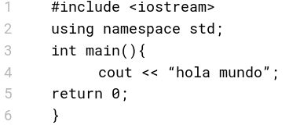
Como podrás notar, hacemos uso de las comillas dobles para envolver “hola mundo”, esto es debido a que “hola mundo” es un string. En caso de que escribieras hola mundo sin comillas, c++ pensaría que te encuentras haciendo referencia a dos variables; la variable hola y la variable mundo
En CodeBlocks copia y pega este código, luego, compila y ejecuta. Notarás que una terminal similar se abre con el siguiente texto (en caso de que te encuentres en windows). En caso de que te encuentres usando macOS, alguna distribución de linux u otro sistema operativo que ejecute CodeBlocks la apariencia será distinta, sin embargo, la salida debería de ser la misma.
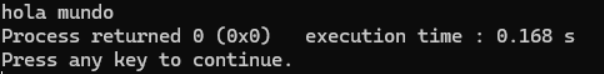
La primera línea dice “hola mundo”, el mensaje que indicaste en tu código. En la segunda línea dice: process returned 0 (0x0) execution time : 0.168s, esto significa que la ejecución fue correcta y tu código llegó hasta el punto en el cual se retorna cero a la función main, es decir, el comando “return 0;” logró el fin del código exitosamente.
Execution time se refiere al tiempo que estuvo el programa en ejecución, la última línea habla por sí misma.
En caso de que quisiéramos crear un mensaje más largo, ej: decirle hola a alguien, podríamos hacer lo siguiente:
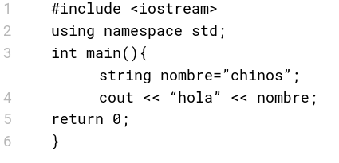
Como puedes notar, usamos dos de esas “boquillas” para separar una variable y “hola”.
Si ejecutas el siguiente código, podrás notar que “hola” y “chinos” se encuentran juntos.
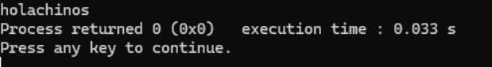
Esto se debe a que no especificamos que queríamos un espacio entre “hola” y “chinos”. Las instrucciones que se le dan a una computadora deben ser perfectas, la computadora no puede predecir.
Si quisiéramos agregar este espacio, nuestro código se vería algo así:
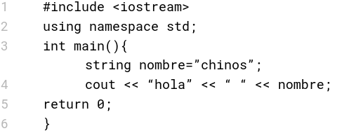
O algo así:
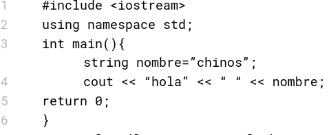
En el primer ejemplo sólo presionamos la barra espaciadora después de hola para agregar el caracter de espacio, en el segundo ejemplo agregamos otras “boquillas” para entonces colocar el caracter de espacio.
Si ejecutamos cualquiera de estos dos códigos, obtendremos lo siguiente:
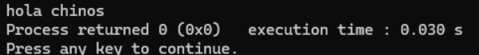
Ahora, con respecto a entrada de datos en c++ hacemos uso de la función “cin” y volteamos las “boquillas”.
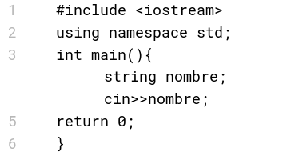
Como podrás notar, “nombre” no tiene ningún valor asignado pues se lo pediremos al usuario a través de la función “cin”. Sin embargo, una variable con un valor asignado a través de un signo de igualación puede obtener otro valor a través de la función “cin”.
Si ejecutamos el código anterior sucederá lo siguiente:
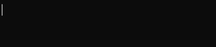
Aparecerá un pequeño cursor donde debes escribir un valor para meter a la variable nombre.
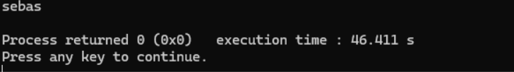
Se metió el valor “sebas”, sin embargo no obtenemos ninguna salida debido a que no hemos indicado que debe haber una salida.
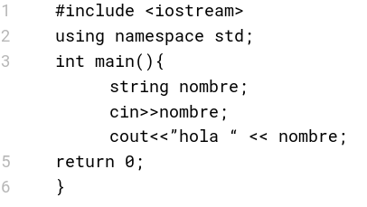
Editando el código de la siguiente manera, obtendremos una salida acorde al valor que hayamos metido a esta variable.
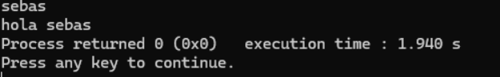
problemas
Muajajaja, te hemos cachado desprevenido con unos cuantos problemas que ayudarán al desarrollo de tu lógica, habilidad en programación, etc.
Es necesario registrar una cuenta en omegaup para que su juez en línea evalúe tu problema. No hay presupuesto para
hacer un juez en línea nosotros, jejeje.
No vayas a usar ninguna inteligencia artifical, copiar, etc etc.
Si haces eso ¿cuál es el chiste carnal?
En caso de que tengas dudas revisa las páginas encontradas en:
recursos